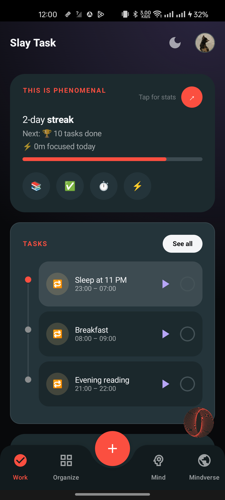
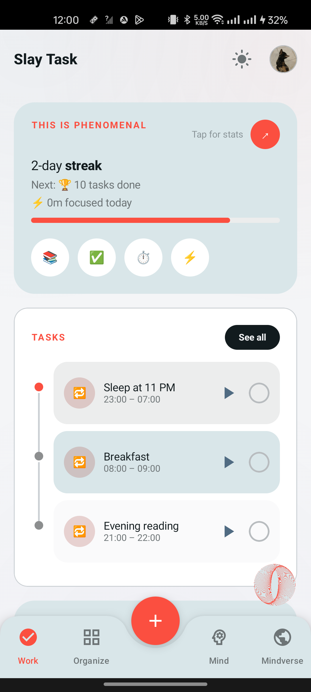
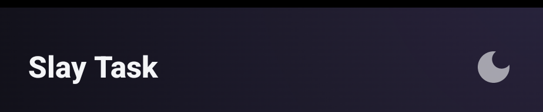
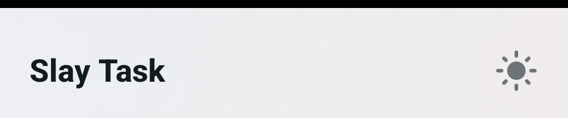
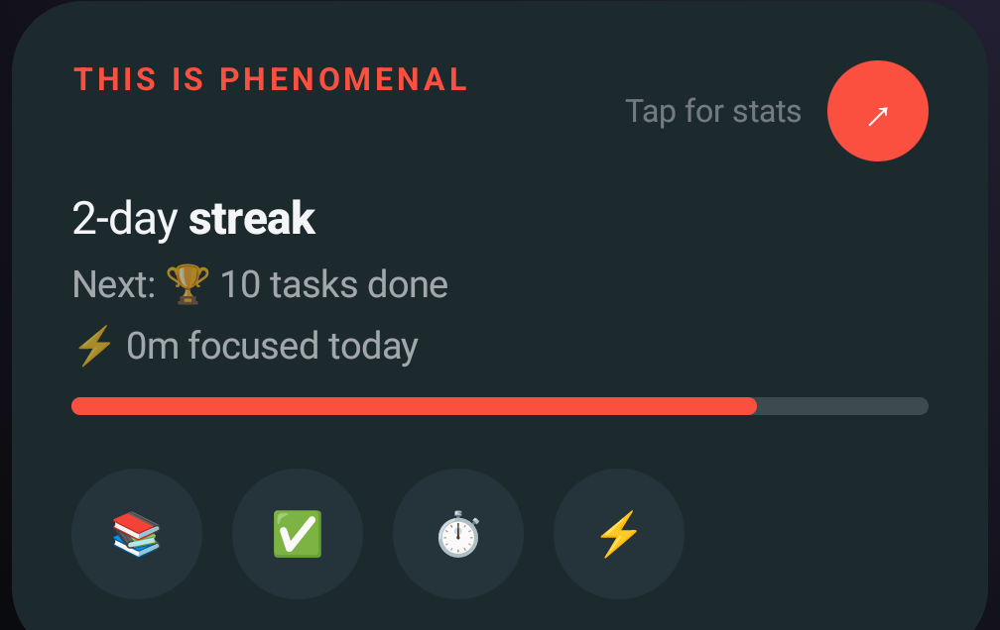
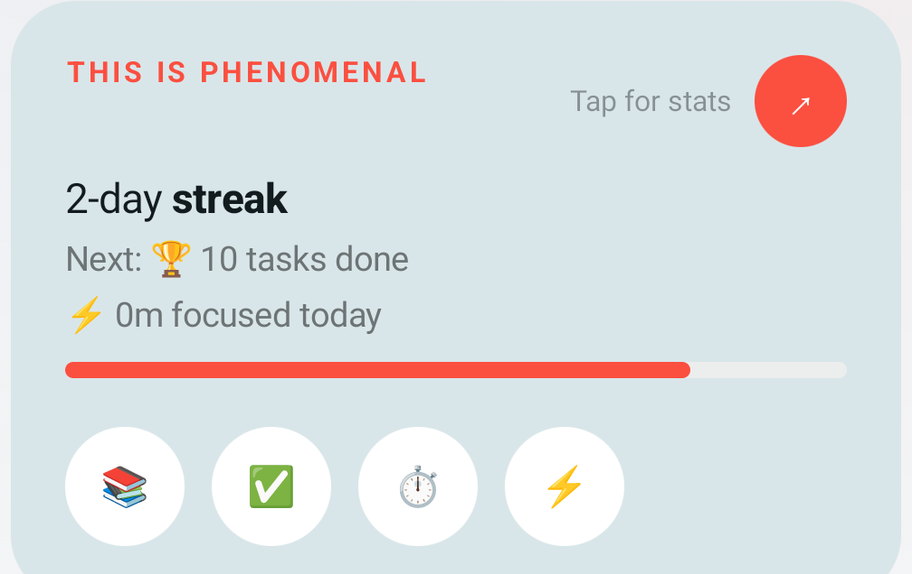
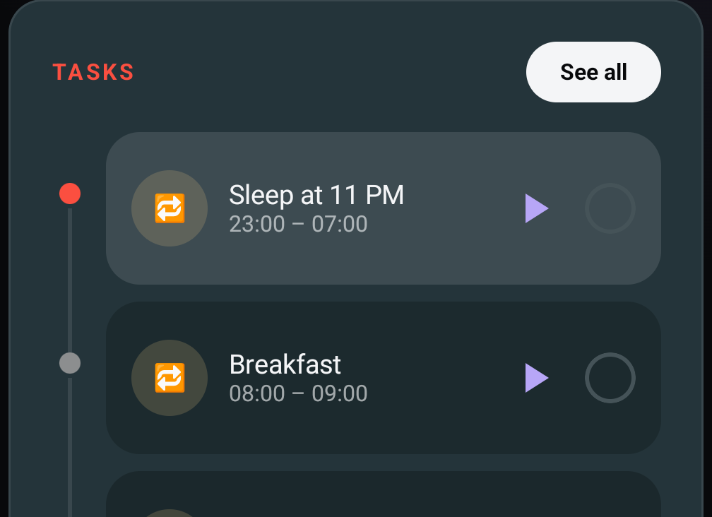
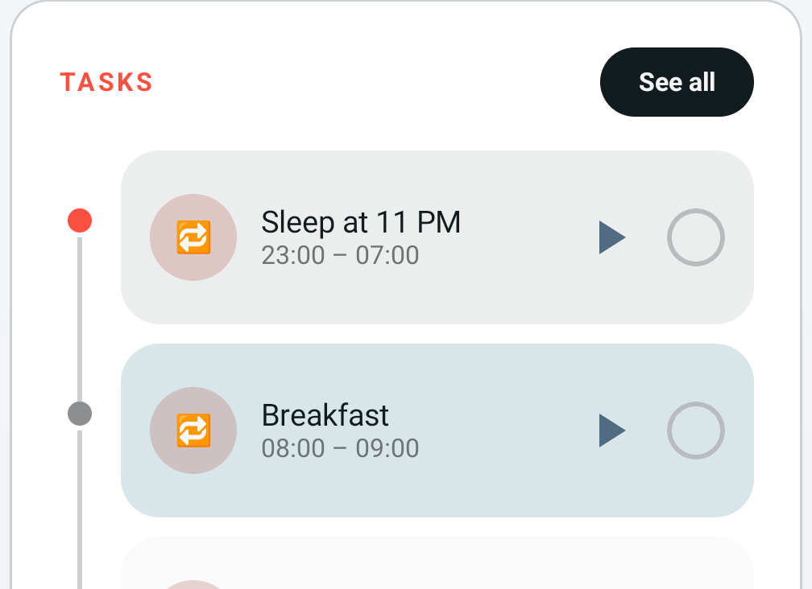
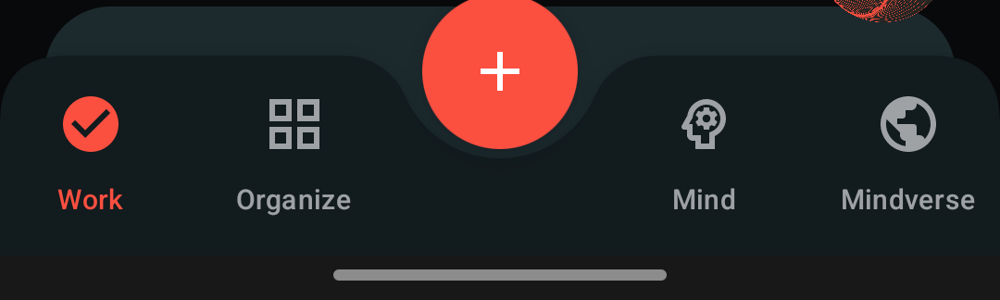
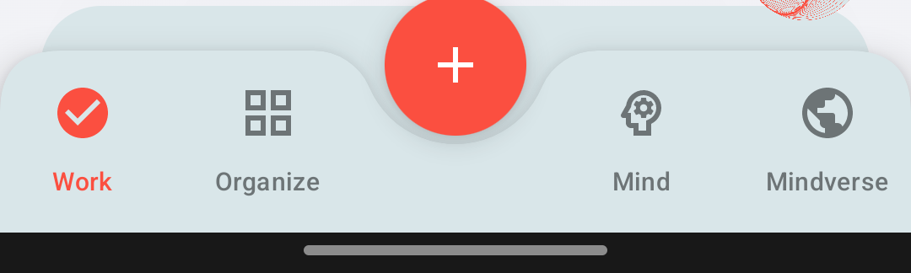

Internal reference — captured 2026-08-01
The app's actual theme,
not a guess at it.
Every color and type value below is read directly from ui/theme/Color.kt, Type.kt and Components.kt — nothing here is reconstructed from memory. The screenshots in §4 are real captures from the device, not mockups.
Start with §5 if you only need one fact: which screens are actually on the current design before you start matching it.
00Overview
Three things make this system unusual enough to state up front.
Color.kt is a Kotlin property with a live getter branching on SbThemeState.mode — the sun/moon icon in the top bar, matching the web app's own toggle. Reading a themed color inside a composable is tracked by Compose's snapshot system, so the whole UI recomposes the instant the toggle flips. Never cache one of these getters in a plain top-level val — it freezes at whichever theme was active on first read and stops updating.
#FB4F40, tinted cards, icon-chip bullets) exists only in the Work tab and the two screens it pushes to (StreakDetailScreen, AllTasksScreen). Every other screen — Organize, Shield, Mind, Mindverse — still runs the original Emerald-led base theme. Don't assume a screen is "current" just because it uses a shared component like SbCard; check §5.
01Color palette
Every swatch below shows its light face and dark face side by side, read straight from ui/theme/Color.kt. Where a family shifts hue between themes (not just lightness), it's called out explicitly.
Ink — background / surface scale
Mist — text scale
StreakAccent family — the current primary accent (flat, theme-independent)
Emerald — base-theme primary accent (hue shifts: teal ↔ violet)
Violet — secondary accent
Gold — tertiary accent (hue shifts: champagne ↔ rust red)
Status & gauge colors
Aura backdrop & nav surface
02Typography
A deliberate serif/sans split, defined in ui/theme/Type.kt. Display sizes use a system serif standing in for Cormorant Garamond — a real webfont was skipped on purpose so the lock screen still renders fully offline. (This reference doc follows the same logic: no embedded webfont, just a considered system stack.) Every sample below and its caption is a real, grep-verified call site inside the Work-tab family — not a generic reading of Type.kt.
displayLarge.copy(fontSize = 56.sp), colored Emerald400.SbLabel(text, color), which uppercases and applies this style. RoutinePlanner's "First run" shown here; also used for "Focus" (Violet400), "Overdue" (Red400), "Drafts"/"Done" (Mist400).headlineLarge (30sp — lives only inside GradientText, which Work never calls), titleLarge (20sp — Mind/Organize only), bodyLarge (16sp — not called anywhere in this codebase right now). Don't reach for these three when matching Work's look.
03Shared components
Defined once in ui/theme/Components.kt, reused everywhere. Rendered here dark-mode-only for exact-color fidelity (these are Compose reconstructions, not screenshots).
RewardPanel.kt, internal. Backs RewardPanel, NudgesStrip, RoutinePlanner, StreakDetailScreen. SbCard (Ink900 + border) is not used anywhere in the Work family.RewardPanel.kt. Flat Ink900 circle, no tint — different from the theme-level SbIconChip (18%-alpha tint), which this family never calls.RewardPanel.kt. Solid StreakAccent circle, the "tap for stats" affordance on the streak card.TasksPanel.kt, private. Mist100 fill, Ink950 bold text, fully rounded.TasksPanel.kt, private. 24dp; solid StreakAccent + white check when done, Ink500-outlined when not. The done/undone toggle on every timeline row.Components.kt, both genuinely used across the Work family. Bolder/12sp vs medium/11sp.AllTasksScreen.kt and StreakDetailScreen.kt headers — not a named component in Components.kt.04Work tab, live
Real device captures of ui/screens/work/ — the current-design reference. Not recreations.
Full tab, both themes


Top bar

ui/nav/TopBar.kt.
"You're doing great" — RewardPanel


StreakCard background via StreakSurface (not plain Ink900) · StreakAccent eyebrow label + progress fill · four StreakIconChip bullets along the bottom · the round arrow badge is StreakArrowBadge, solid StreakAccent regardless of theme. Source: ui/screens/work/RewardPanel.kt."Tasks" — dot-and-line timeline


SbSectionTitle with the pill SeeAllButton · each row alternates background through a 4-color cycle (rowBg() — cycles Ink700/StreakCard/Ink800/Ink600) so consecutive rows read as distinct without borders · the dot on the vertical line is StreakAccent for "now/next", StreakSilver otherwise. Source: ui/screens/work/TasksPanel.kt.A single timeline row, close up
Bottom navigation


NavBarSurface token, not reused Ink900. Shield has no tab here by design — it's reached via the account menu only. Source: ui/nav/BottomBar.kt.05Design maturity map
Which screens are actually running the current (StreakAccent-led) system versus the original base theme — check this before assuming a screen you're editing already matches Work.
| Screen | Status | Notes |
|---|---|---|
Workui/screens/work/* |
● current | Origin of the redesign. StreakAccent throughout, StreakSurface's tinted StreakCard background, StreakIconChip bullets, pill buttons, dot-and-line timeline rows. |
StreakDetailScreen ("Tap for stats")ui/screens/work/StreakDetailScreen.kt |
● current | Pushed from Work's RewardPanel — same current system, not a separate design pass. |
AllTasksScreen ("See all")ui/screens/work/AllTasksScreen.kt |
● current | Pushed from Work's TasksPanel — same current system, not a separate design pass. |
Organizeui/screens/organize/* |
○ old design | Plain SbCard, Emerald-led accents. Predates the redesign pass — treat as base theme, not current, regardless of what any earlier note claimed. |
ShieldDashboardScreen.kt |
○ old design | Plain SbCard, no tint. Predates the redesign pass. |
Mind / Mindverseui/screens/mind/*, mindverse/* |
○ old design | Same — only the shared theme tokens, no section-level redesign pass yet. |
06Token cheat sheet
Every token in Color.kt, condensed. — means the value is flat (same in both themes).
| Token | Light | Dark | Typical use |
|---|